العالميةMSX
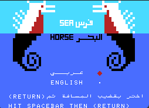
Seahorse
فرس البحر
عنوان من مكتبة العالمية العربية على MSX.
تشغيل على File-Hunterصخر… بداية رحلة الحاسوب باللغة العربية.
حكاية مشروع بدأ عام 1982، قاده محمد الشارخ رحمه الله ليقرّب الحاسوب من لغتنا وبيوتنا. هنا نتذكر الرحلة، ونعبر إلى عشر تجارب من مكتبة MSX العربية.
صخر اسم ارتبط بتعريب الحاسوب الشخصي وبالبرامج التعليمية والثقافية العربية. نشأ المشروع في الكويت ضمن مجموعة العالمية، وجمع بين تطوير البرمجيات العربية وإتاحة الحوسبة لجمهور أوسع.
اختلاف تاريخ المشروع عن تاريخ جهاز بعينه مهم: نعتمد 1982 سنةً لبداية مشروع صخر، كما يروي مؤسسه في حواره، ولا نستخدمها تاريخًا لإصدار جميع أجهزة صخر. [1]
1942 — 6 مارس 2024 · الكويت
محمد بن عبدالرحمن الشارخ، مؤسس مشروع صخر ورائد من رواد حوسبة اللغة العربية. آمن بأن اللغة لا ينبغي أن تقف خارج التقنية، وجمع حول هذه الفكرة جهودًا علمية وهندسية، من أبرزها جهود الدكتور نبيل علي. [1]
ينسب إليه، بعد الله، الفضل في إدخال اللغة العربية إلى الحواسيب. وقد وصفه المجلس الوطني للثقافة والفنون والآداب في الكويت في نعيه بأنه أول من أدخل اللغة العربية إلى الحواسيب، في التاريخ
، وفق نقل الجزيرة. [3]
امتد أثره إلى المعاجم الإلكترونية، والتدقيق اللغوي، والنطق والترجمة الآليين، وأرشفة المجلات العربية. وفي عام 2021 نال جائزة الملك فيصل في خدمة الإسلام. [2]
رحمه الله، وجزاه خيرًا عن العربية وأهلها.
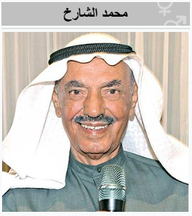
اضغط «تشغيل على File-Hunter» لفتح المحاكي في موقعه الأصلي. التصفح والبحث هنا داخل CARTO؛ أما تشغيل البرنامج فيتم على File-Hunter، وليس داخل هذه الصفحة.
بعد فتح المصدر، انتظر اكتمال تحميل المحاكي واضغط شاشة البدء إن ظهرت. اتبع تعليمات البرنامج؛ قد تحتاج إلى لوحة مفاتيح أو أدوات اللمس في المحاكي. ملء الشاشة والتحكم والصوت تتبع إعدادات المصدر.
المجموعة من مكتبة MSX العربية، وليست موثّقة هنا على أنها خاصة بطراز «صخر 160». لم نجد في المصادر التي راجعناها ما يثبت هذه النسبة.
10 مواد

فرس البحر
عنوان من مكتبة العالمية العربية على MSX.
تشغيل على File-Hunter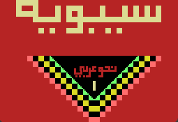
سيبويه 1
من برامج النحو العربي في مكتبة العالمية.
تشغيل على File-Hunter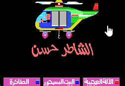
الشاطر حسن
نسخة برق من الشاطر حسن، كما يعرّفها المصدر.
تشغيل على File-Hunter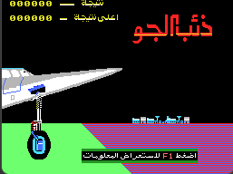
ذئب الجو
أحد عناوين برق في أرشيف MSX العربي.
تشغيل على File-Hunter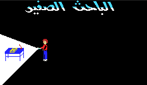
الباحث الصغير
مفهرس أيضًا باسم Young Researcher في المصدر.
تشغيل على File-Hunter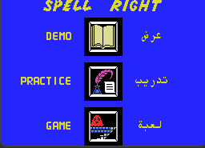
التهجئة الصحيحة
عنوان للتهجئة من مكتبة العالمية؛ الاسم كما في المصدر.
تشغيل على File-Hunter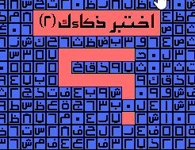
اختبر ذكاءك — ٢
الجزء الثاني من عنوان اختبر ذكاءك.
تشغيل على File-Hunter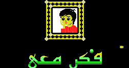
فكّر معي
فكّر معي من إصدار برق، ضمن المكتبة العربية.
تشغيل على File-Hunter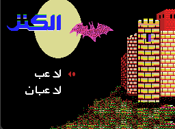
الكنز
عنوان الكنز من إصدار برق.
تشغيل على File-Hunterرحلة إلى مكة
يظهر أيضًا باسم Voyage To Mecca في المصدر.
تشغيل على File-Hunterلا توجد مواد تطابق بحثك. جرّب اسمًا آخر أو أعد ضبط البحث.
صور من أجهزة صخر وبرامجها وحضورها على الويب. اختر أي صورة لعرضها كاملة بحجم أكبر في تبويب مستقل.
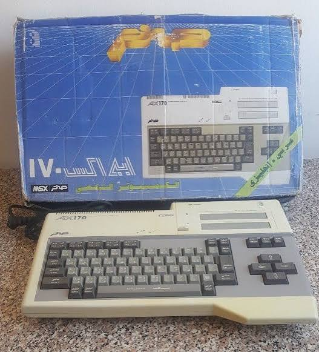
عرض الصورة كاملة ↗الجهاز ولوحة مفاتيحه العربية إلى جانب علبة التغليف الأصلية.
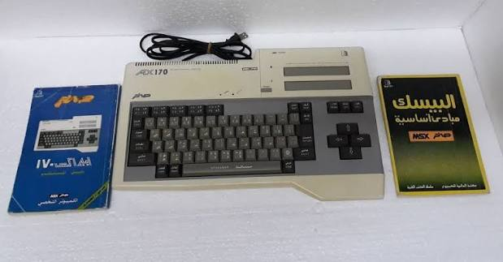
عرض الصورة كاملة ↗الجهاز مع كتيّب الاستخدام ودليل لغة بيسك.
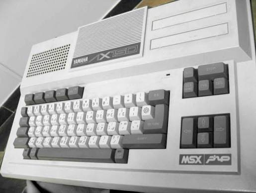
عرض الصورة كاملة ↗لقطة بالأبيض والأسود تُظهر لوحة المفاتيح العربية وعلامة MSX وصخر.
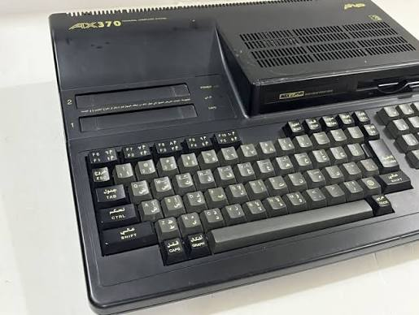
عرض الصورة كاملة ↗تصميم أسود مع مشغّل أقراص مدمج ولوحة مفاتيح عربية.
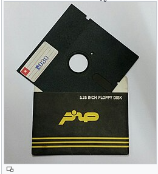
عرض الصورة كاملة ↗قرص مرن بقياس ٥٫٢٥ بوصة مع غلاف يحمل شعار صخر.
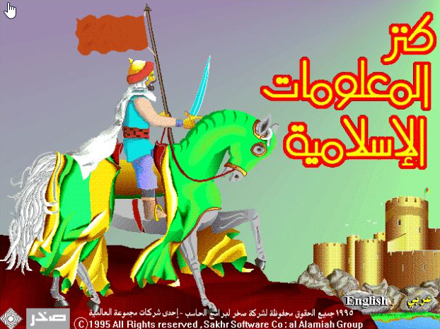
عرض الصورة كاملة ↗شاشة عنوان البرنامج، ويظهر عليها تاريخ ١٩٩٥.
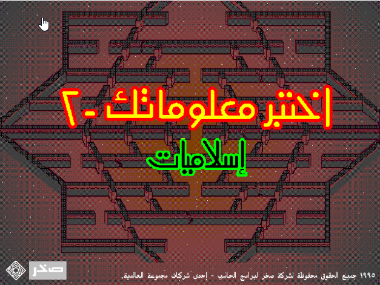
عرض الصورة كاملة ↗شاشة عنوان الجزء الثاني من برنامج الاختبارات.
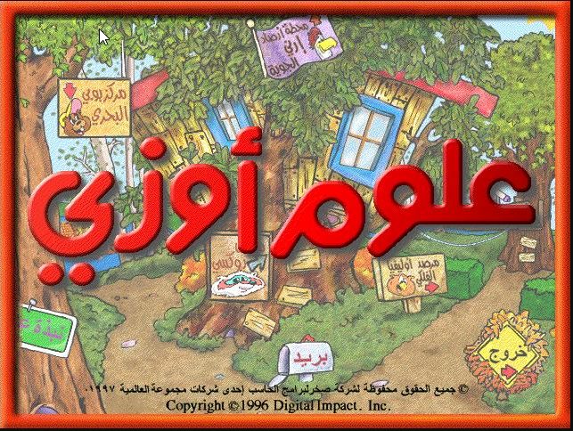
عرض الصورة كاملة ↗واجهة مرسومة لبرنامج العلوم، مع اسم Digital Impact الظاهر في الصورة.
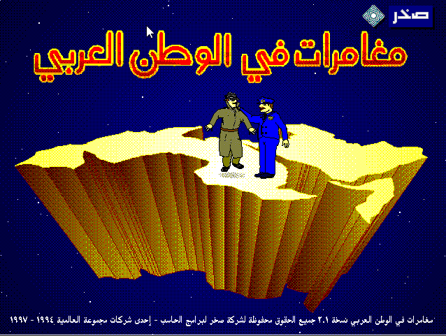
عرض الصورة كاملة ↗شاشة العنوان بخريطة مجسّمة للوطن العربي وشخصيتَي المغامرة.
ثلاث لقطات لبرنامج القرآن الكريم: معلومات الإصدار، وشاشة القراءة، وأدوات التنقّل. تظهر في الواجهات تسميات باللغة الملايوية.
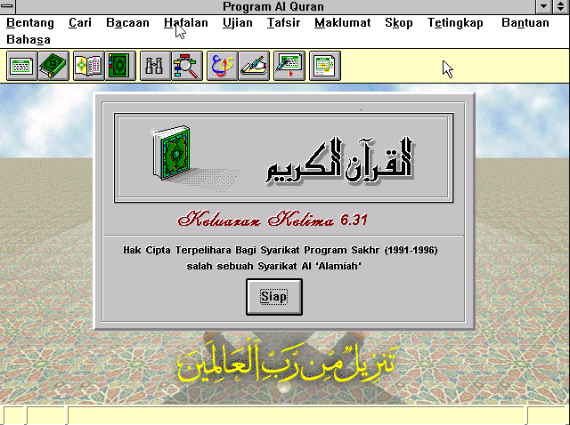
عرض الصورة كاملة ↗نافذة معلومات البرنامج؛ يظهر فيها الإصدار ٦٫٣١ وحقوق صخر للفترة ١٩٩١–١٩٩٦.
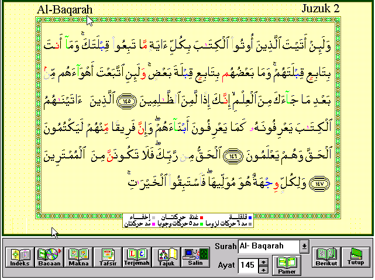
عرض الصورة كاملة ↗عرض آيات من سورة البقرة مع أدوات القراءة والتفسير والترجمة.
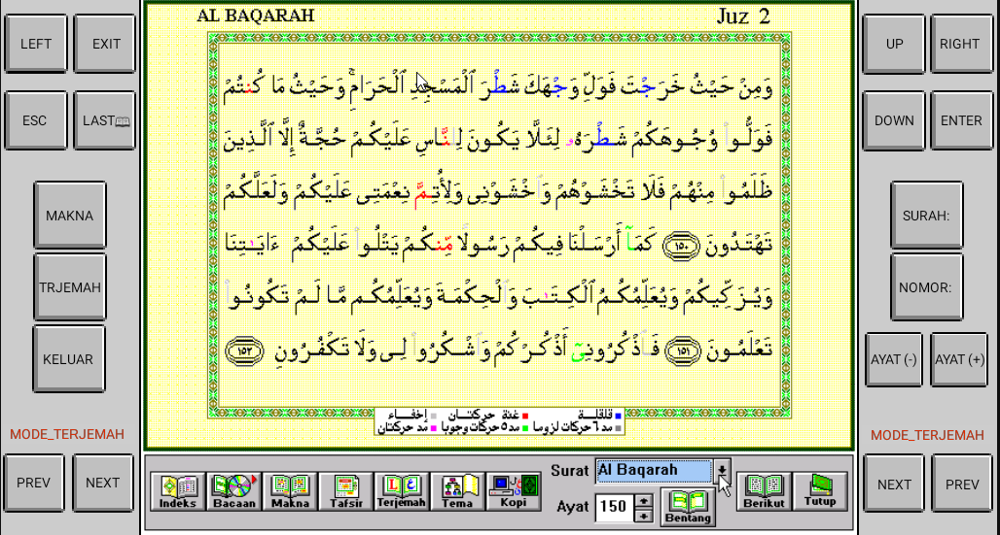
عرض الصورة كاملة ↗واجهة أخرى لقراءة سورة البقرة، مع أزرار التنقّل واختيار السورة والآية.
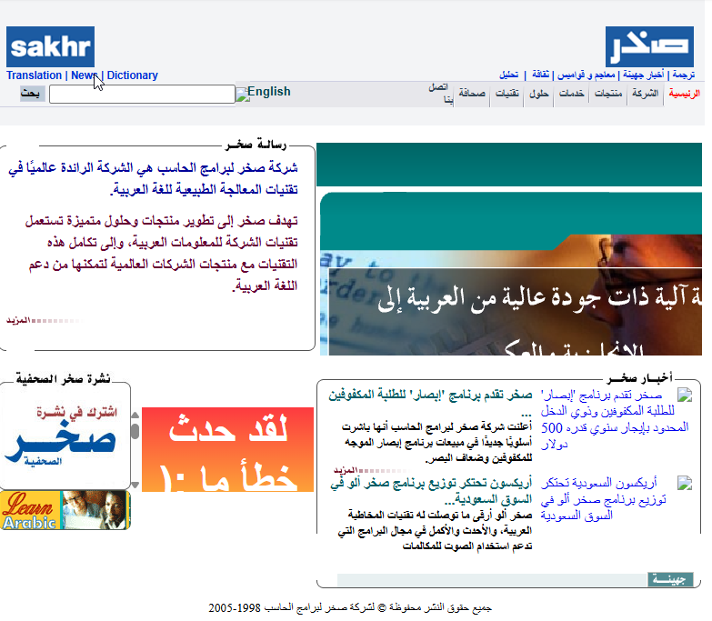
عرض الصورة كاملة ↗لقطة قدّمها مالك الموقع بوصفها نسخة عام ٢٠٠٥؛ يظهر في تذييلها نطاق الحقوق ١٩٩٨–٢٠٠٥.
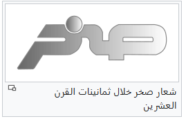
عرض الصورة كاملة ↗صورة توثيقية للشعار، مع تعليق مرفق يشير إلى استخدامه في الثمانينيات.
روايته لبداية المشروع عام 1982، ودور نبيل علي، ومسيرة التعريب.
الميلاد والوفاة، وجائزة 2021، وأعماله في الحوسبة والتعليم والثقافة.
مصدر النقل عن وصف المجلس الوطني الكويتي لدوره في إدخال العربية إلى الحواسيب.
أسماء المواد وناشروها وروابط تشغيلها؛ لكل بطاقة رابط عنوانها المحدد.